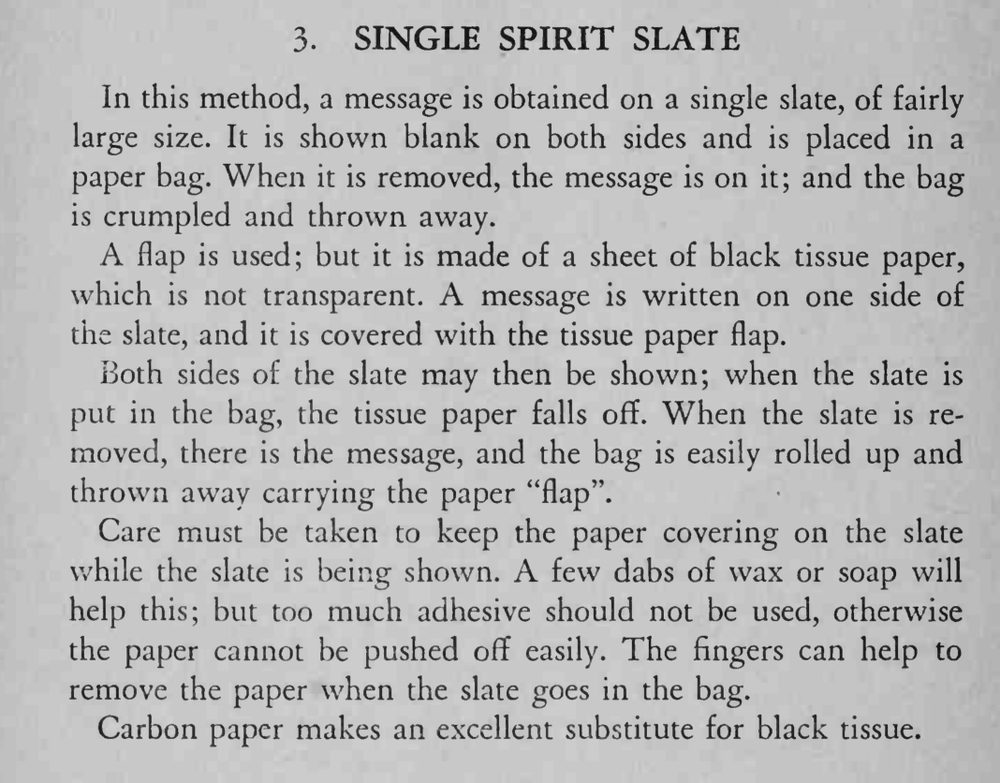

一块石板两面都示为空白，装进纸袋再取出时，石板上却出现了字迹，纸袋揉成一团扔掉也不露破绽。
展示时薄纸要粘牢不露边，入袋后必须让它干净利落地脱落。

In this method, a message is obtained on a single slate, of fairly large size. It is shown blank on both sides and is placed in a paper bag. When it is removed, the message is on it; and the bag is crumpled and thrown away. A flap is used; but it is made of a sheet of black tissue paper, which is not transparent. A message is written on one side of the slate, and it is covered with the tissue paper flap. Both sides of the slate may then be shown; when the slate is put in the bag, the tissue paper falls off. When the slate is removed, there is the message, and the bag is easily rolled up and thrown away carrying the paper "flap". Care must be taken to keep the paper covering on the slate while the slate is being shown. A few dabs of wax or soap will help this; but too much adhesive should not be used, otherwise the paper cannot be pushed off easily. The fingers can help to remove the paper when the slate goes in the bag. Carbon paper makes an excellent substitute for black tissue.